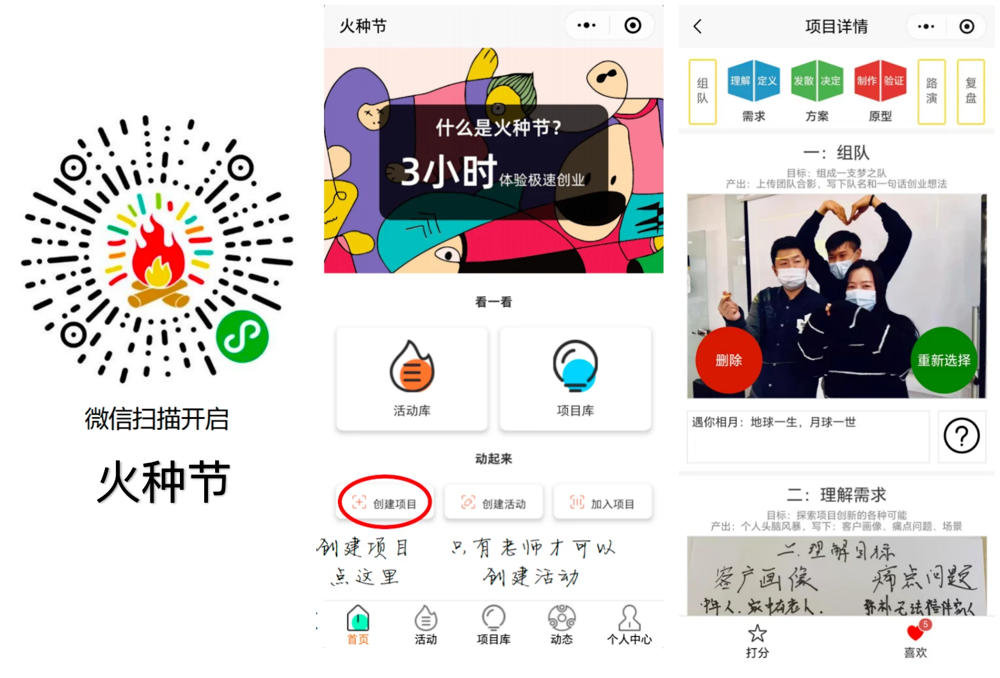
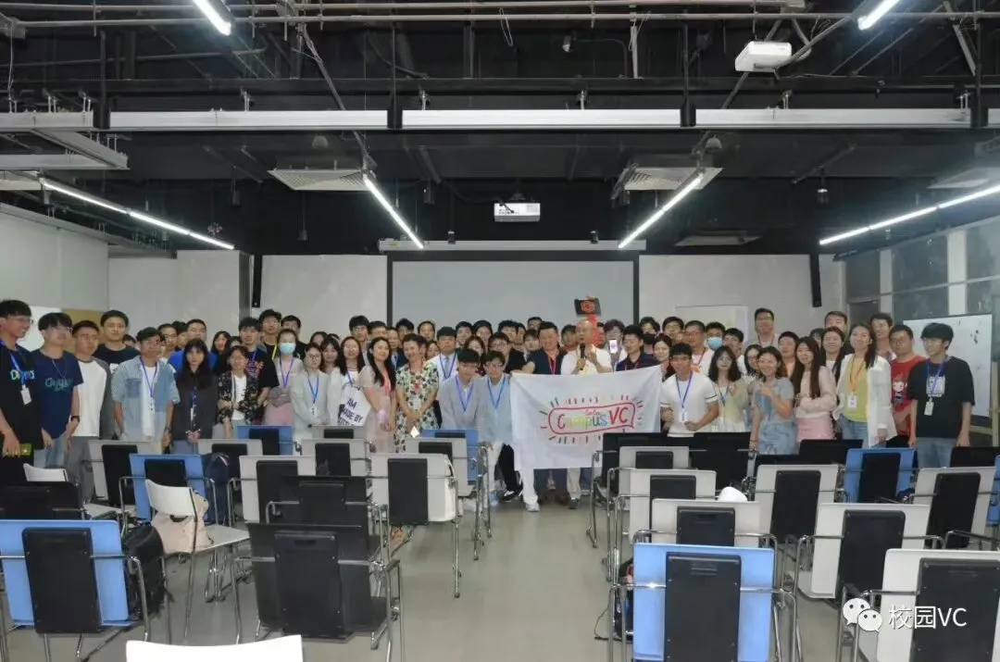
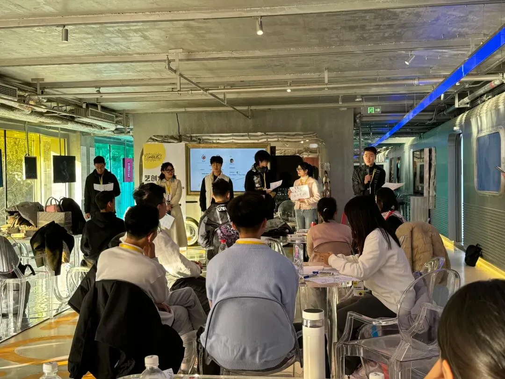
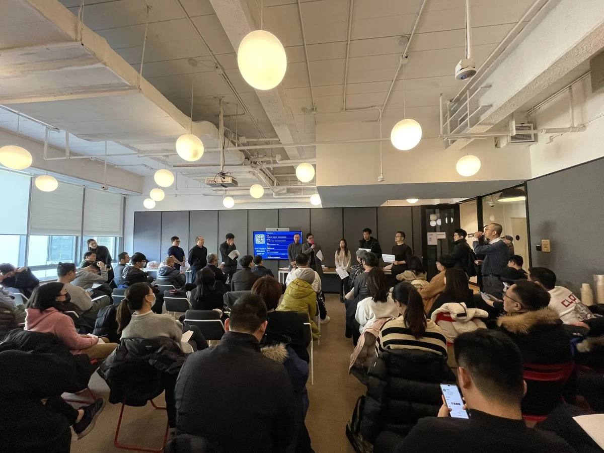
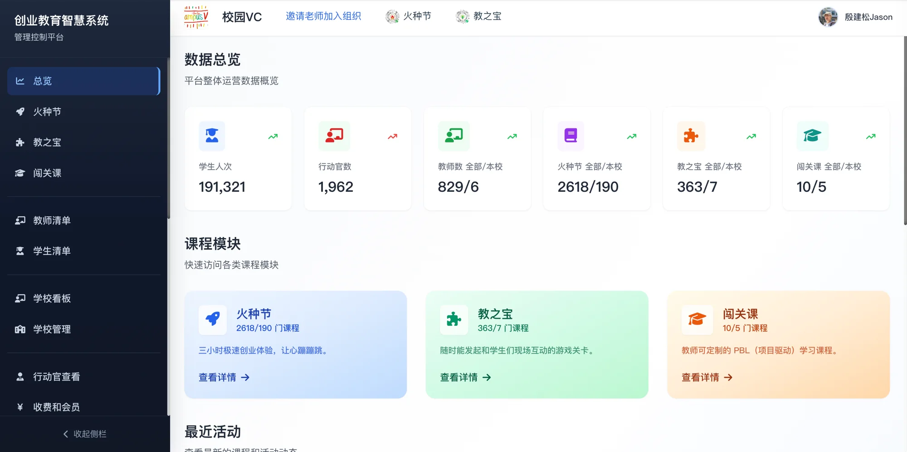

双创课最难的，是"做体验"
讲创业概念容易，让学生真正经历一次创业很难。这是大多数创新创业课堂共同的瓶颈。
停留在听讲与写计划书
学生听了很多创业理论，却没真正洞察过用户需求、做过方案取舍、验证过一个原型。知识没有变成能力。
缺乏经验，体会不到乐趣
大学生普遍没有创业经验，难以感受到和伙伴一起为一个想法激动、把它推进成型的那种乐趣，参与度自然低。
缺一种可复制的实践单元
组织一次完整的创业实践，往往意味着大量准备、不确定的流程和难以把控的课堂。教师需要一个低门槛、能按时出成果的工具。
火种节要解决的，正是这个问题——把一次完整的创业过程，做成教师可以低成本组织、学生人人能走完的课堂实践单元。
不是把课堂做热闹，是把创业过程拆成学习路径
火种节的设计有明确的方法论来源，这决定了它是教学工具，而不是娱乐活动。
火种节把以上方法论融合为一条可执行的学习路径：学生不是"听一节创业课"，而是走一遍创业过程——三小时完整经历从想法到原型、再到市场验证的全程。对教师而言，课堂的每一步都有方法支撑，过程可控、成果可预期。
相比传统黑客松，火种节有六大优化：先破冰再组队、创意投票选出质量下限、队长招聘模拟市场、流程引导不失控、鼓励"疯狂而愚蠢"激发玩的精神、活动结束后团队真会继续做下去。历史上"复活恐龙"落地成研学旅行、"光合作用"引导学生查科研论文——天马行空的问题,往往藏着令人着迷的方向。
9 个里程碑，每一步对应一项能力
软件按里程碑逐步引导课堂。学生在"好玩"的体验背后，完成的是一套结构化的创业能力训练。
组队
组成一支梦之队，定下队名和一句话创业想法。
理解需求
发散探索客户画像、痛点问题与使用场景。
定义需求
团队投票收敛，确定最佳客户需求与目标。
发散方案
用"疯狂小八"激发头脑风暴，发散产品创意。
决定方案
用创新矩阵筛选，选出需求强、可实现的方案。
制作原型
协作做出最直观呈现产品的原型，可借助 AI 工具。
验证原型
邀请他组同学当用户体验，收集真实反馈。
路演
CEO 带队一分钟路演，同学化身投资人投票。
复盘
总结经验、分享体会，把过程沉淀为方法。
一个微信小程序，把九大环节装进口袋
学生扫码即用，无需下载。每完成一个环节，里程碑图标自动点亮——进度看得见，课堂有节奏。

降低的是组织成本，不是教学标准
火种节是一个微信小程序。教师开通"行动官"权限后即可发起活动，无需安装、无需复杂准备。
几乎零准备
- 在微信小程序里创建一场火种节活动
- 设置活动时间、规则，生成参与二维码
- 无需写教案——9 个里程碑就是现成流程
软件引导，教师做教练
- 学生提交创意、投票、组队，软件自动推进
- 按里程碑逐步引导，流程不会失控
- 教师专注于观察、点评和启发，回到引导者角色
留下可见的成果
- 每个团队的项目、原型、路演都有记录
- 沉淀为课程实践成果，可用于教学总结
- 复盘环节帮助学生把经验转化为方法
教师始终是课堂的设计者、引导者与评价者——火种节让你更容易组织一场高质量的实践课。
从一节课，到一所学校的创客马拉松
火种节自 2019 年发布以来持续在全国高校运行——同一套方法论，既能支撑普通课堂的小型实践，也能放大为院系级、校级的创新活动。

ChatGPT 火种节
校园VC 与清华 x-lab 联合主办的放大型火种节。在标准流程之上加入创业导师与投资机构嘉宾给项目真实反馈，48 小时孵化 AI 大模型早期项目，15 支团队同台路演——火种节叠加社会资源、让学生体验真实创业环境的形态。

艺创火种节
在北京三里屯举办的 2 天放大型火种节，主题"AI 生命"，融合艺术创意与科技创新。学生来自全国多所高校，近十位产业、投资、高校导师轮值辅导，6 支团队完成从创意到路演的全程——展示了方法论在不同学科主题下的适配能力。

河北美术学院首届火种节
2025 年 12 月，河北美术学院在《创新创业基础》课程中开展首届火种节，以"3 小时体验极速创业"为核心，跨多场累计近万人规模，并特邀国赛评委到场点评——一所学校把火种节办成了全校性的创新教育事件。
火种节正在演进 AI 能力
让 AI 成为教学支持，而不是替代教师
教师依然是课堂的设计者与评价者——AI 承担的是过程性的辅助，最终的点评、引导与价值判断仍然由教师完成。
火种节，是创业教育智慧系统的一部分
火种节主要通过微信小程序开展；而面向教师的管理与更多教学工具，都在网页端 edu.xiaoyuanvc.com。

火种节给学生的是一个微信小程序，扫码即用；给教师的，是网页端的一整套管理控制平台——开通行动官、创建活动、查看学生成果数据，都在这里完成。除了火种节，网页端还为教师提供另外两个教学工具。
后台使用手册 · 行动官如何管理活动与成果
创业教育智慧系统用户手册 网页后台操作指南：开通行动官、创建活动、查看学生成果数据。 PDF · 0.5 MB